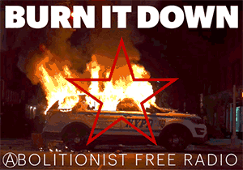

[Click above or copy on your prefered player/browser]
[NOW PLAYING --20/30sec delay--]
'Burn It Down' is a community non-commercial Abolitionist Free Radio transmitting from the heart of the northeast 'Anarchist jurisdiction'.
We are an autonomous, non-hierarchical, multi-cultural collective focusing on amplifying our community's cultural and artistic expression in these challenging times.
We are bringing to you (A) 24/7 pirate radio-signal to feed the flame of revolution 🔥 in your room, street, neighborhood, front-lines, school, prison jail, place of work, or simply to your computer and phone wherever you go. We will accompany you with curated music-playlists, live shows, podcasts, interviews, and much more from different territories, backgrounds, languages, and music genres.
Our programming is anti-fascist and anti-capitalist, in pro of the abolition of the state, prisons and police.
WE LOVE MUSIC & HATE FASCISM!
BURN IT DOWN!
☆

• Established in the uprising of 2020 •
☆ ☆ ☆ ☆ ☆
Visit our comrades of CZN
for more dedicated podcasts:

CHANNEL ZERO NETWORK
English-based anarchist podcast network.
https://channelzeronetwork.com/
COPYLEFT - Freely distribute and modify.